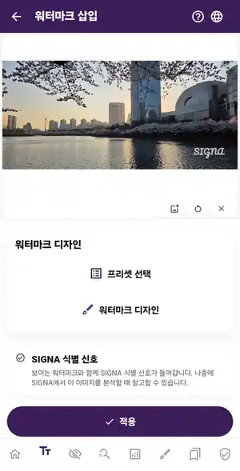

01 · PROTECT
Visible watermarks,
your way.
Add text or image-logo watermarks and adjust their placement and appearance. In the visible-watermark flow, SIGNA also records an invisible SIGNA signal.
Text & logo watermarks · placement and styling · SIGNA signal in supported workflows